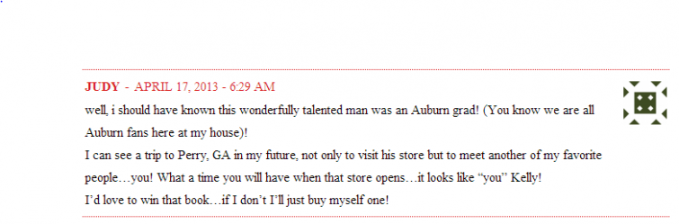

.png)
.PNG)
.PNG)
.PNG)
.PNG)
.PNG)
.JPG)
.JPG)
.PNG)
.PNG)


Doesn’t it seem like April has just flown by? Where in the world did this month go? I think if I am going to show you spring things before summer arrives, I had better do it now. Oh but wait… I’m supposed to be telling you who won the James Farmer cookbook! Let’s do that first. (Otherwise you will just skip all my photos and scroll to the bottom to see who won it. 🙂 ) The random number generator selected lucky comment #23…

and that belonged to this comment from the original giveaway post:
So congratulations, Judy! Shoot me your mailing address, and I will get that Auburn grad’s cookbook in the mail to you this weekend. I wish I could give all of you one, but since I can’t do that, I have made plans for a different giveaway for late May or early June. So please stick around.

Now let me show you how spring has made its appearance in the house. (I hope you can see from the photo of the dogwood tree above, spring has obviously arrived outdoors!) You know by now that I (like many of you) tend to make seasonal changes around here. Yellow and green seem to be the perfect colors to bring out spring. Many people add pink at this time of year, but that color just does not work in my rooms.

I added yellow and green books, the gerbera daisy with its yellow flowers, and a few other things to the buffet piece in the foyer. Oh, and there are new lamps in there, too! Forgot about that. I kept the shades but changed out the bases. Thank you Target. (It has nothing to do with spring…just wanted a little more updated look there.)

The jar of water is useful, and I thought the label was funny. “Spring water”…get it? ha ha. 🙂

Even the red candies on the piano from winter are gone and replaced with sweet yellow lemon drops.

If you read the wicker post, you saw my “spring time” big chalkboard in the playroom.
And here is the small one that also hangs in there. (I love that white ceramic can for some unexplained reason.)
I will have more to show you this weekend…spring in two other rooms around here. That’s if I survive moving our daughter home as she finishes her first year of college! I have been frantically trying to finish redoing her room before she gets here, and I’ve got to hang drapes in there tonight. Wish me luck!!
Again, congratulations to Judy!
I will leave you all with a question to talk about today:
What is your favorite way to make seasonal changes in your home?
Can’t wait to hear from all of you!


.PNG)
You make me smile – and LOVE your azaleas. Haven’t had much luck with them in Missouri!
Wow! I miss the south this time of year. It was a cold spring here in Nebraska and it is just starting to warm up. Love the new lamps. I really am liking Tarjay’s lamps lately. I have my eye on the floor lamp weathered wood finish.
I usually try to bring in the Forsythia branches and yellow, blue, or green pillows for my white slipcovered furniture. When the garden starts blooming I try to keep fresh flowers in the house.
Hello Spring!
Yellow and green, two colors that shout, “Spring”! Good luck with your daughter’s room, what a wonderful homecoming surprise for her. Looking forward to more spring posts from you before the days of summer arrive. Rhode Island is finally enjoying a run of days with temps in the sixties but not all the foliage has burst forth yet, and it’s so late in the month. I, on the other hand, feel like April has been endless, maybe with Easter coming so early that made it seem like April came earlier, too??? Not complaining, it’s one of my favorite times of year.
Kelly,
I always add lots of extra potted plants around the house for some Spring touches. I use really and artificial potted plants to do this. I love all of the green this time of year! Thanks for sharing your Spring touches! Good luck with your daughters room!
Love your decorations! Frankly, I don’t decorate all that much, most of the time I miss the right moment because work gets in the way and then I’m like: “Awww, well, let’s do it for summer then!” 😉 I still have bunnies on the dining room table, ha ha!
I have been staring at those Target lamps for a few weeks now and bought one of the smaller ones. I think you’ve convinced me that they need to be in my entry way which is eternally too dark. Love your lemon drops. That’s such a cute touch. Again I say your talent is amazing.
I change out my mantel, kitchen countertop and dining room table centerpiece. Also decorate my mailbox, my white picket fence and arbor, plus entry gate. Living in FL I can have flowers almost all year round so I plant seasonal bedding flowers and plants. In my classroom, I had two faux trees and a wonderful parent who changed the “apple trees” four times a year! So beautiful — and also help me have my four seasons which I missed from my childhood in the mountains of KY. As always, truly enjoyed seeing how you make spring bloom in your home!
I adore your blog!!! I am especially fond of your chalkboards. I would l-o-v-e for you to show us how you draw one from start to finish (in a future post). You have beautiful handwriting and I am totally jealous. 🙂 Thanks for sharing your adorable home with us!!
Congrats to Judy……oh how I wish spring would make it to the Midwest!
Well I like to change my candles to lighter scents..right now I have strawberry in my living room. I also like to lighten up colors and I did purchase a new flag for the back walk. It is a pretty blue hydrangea, replacing the Bunny.
I can’t wait for you to give a tutorial on your chalkboard writing! I have been toying with copying your script. Thanks for the close-ups of your chalkboards. I change my chalkboards to fit the season….different sayings, different drawings. Happy Spring!
I love how you have freshened up for spring! I just bought one of those Target lamps too! Gotta love that store!
-Shelley
Everything looks just beautiful, Holly. I love the way you have pulled everything together-colors and textures. Congrats to Judy,too- xo Diana
I loved reading that yellow and green have made their debut in your home for Spring! I wrote a ‘Spring Inspirations’ post in March (http://simplysuzannes.blogspot.com/2013/03/spring-inspirations.html) sharing all the yellow and green in our home for this beautiful season. Yellow is so beautiful and happy!
Thanks for sharing . . . looking forward to seeing more!
Kelly,
YOU are a ray of sunshine and just love all of your touches to bring spring into your home. Get those drapes hung tonight…I always loved when my daughter and son came home from college for the summer. Enjoyed your post.
Seasonal changes always occur on the mantel here, and over the mantel with a wreath or picture. It’s just the focal point of the house, and easy to switch things out quickly. If the mantel is dressed for the season, it feels like the whole house is.
Kelly,
Such pretty touches of Spring! I like to bring out my collection of nests I’ve found in the neighborhood and in our yard, they are delicate and I have some real quail eggs that I place in each. I start cutting the Iceberg roses for fresh flowers all around and I put the lambswool throws away for the season.
I’m afraid if I had a jar of yummy candy out I’d eat it myself!
Karen
Well, I’m like you. Pink would not fit into any room in my home so I use alot of yellow and green too. (I do love pink though!)
I change out different vignettes on my buffet in the kitchen/dining area, on top of my old pie safe, in the family room on a table, out on the front porch and just about everywhere. I change with the seasons. I have a junk corner in my attic where I stash my favorites and when its time I just go up there and pick around and come up with something. I have my Nana’s old white ironstone soup tureen I use quite a bit and I collect jade-ite. I also love old clocks. I change out my bedroom from winter to summer. Winter is red and white and summer is ocean colors. I found another duvet at Pottery Barn I really want but I don’t have anywhere to store it so I didn’t get it. Yet……. Your spring colors and decorating are really pretty ☺
As soon as I saw the picture with the “Spring Water” I laughed!Very cute! We wait and wait for spring and then when it gets here we are barely ready before summer comes busting through the door! I better get moving myself! Wanted to stop by and tell you how much I enjoy your blog!
~Kathleen
After the beauty of decorating for fall and Christmas I have a bit of trouble being satisfied with my decor for Spring. I have gathered soft yellow items over time but right now the whole house is in disarray due to remodeling (and maybe a bit of laziness on my part – ha!). Hopefully next year at this time we will be done and I’ll enjoy some new Spring decor – fingers crossed!
http://northislandcottage.blogspot.com/
I love that you change up your candies with the seasons!
As for me…. well, it’s not officially spring until I can put flowers in the planters out front. Alas, that time has not come yet. 🙁